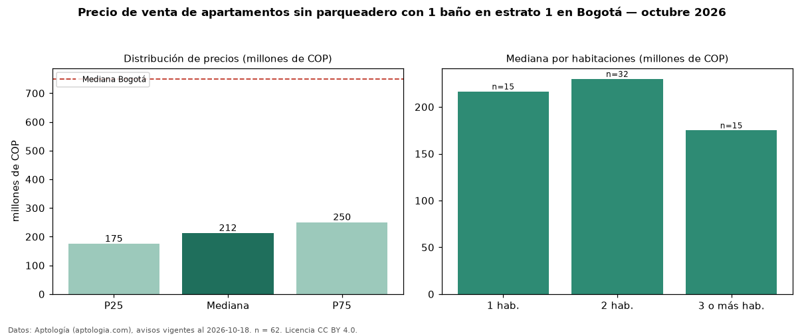

Precio de venta de apartamentos sin parqueadero con 1 baño en estrato 1 en Bogotá — octubre 2026
COP 212 millones es el precio mediano de apartamentos sin parqueadero con 1 baño en estrato 1 en venta en Bogotá (n = 62 avisos). Eso es 5 % menos que la mediana de los apartamentos sin parqueadero en estrato 1 en venta de Bogotá (COP 224 millones, n = 91); este segmento reúne el 68 % de esos avisos. Por metro cuadrado, la mediana es COP 6,03 millones/m² (n = 61), 10 % por encima de los apartamentos sin parqueadero en estrato 1 en venta de Bogotá (COP 5,49 millones/m²). El área mediana anunciada es 40 m². El segmento con más oferta es el de 2 habitaciones (32 avisos, mediana COP 230 millones); pasar de 1 habitación a 3 o más habitaciones cambia la mediana −19 %. La administración mediana declarada es COP 131.000 al mes (n = 57). La mediana de todos los apartamentos en venta de Bogotá es COP 750 millones (−72 % de diferencia). La mitad central de los avisos va de COP 175 millones a COP 250 millones (razón 1,4), una dispersión moderada. Datos: Aptología (aptologia.com), CC BY 4.0 — https://www.aptologia.com/venta/bogota. Archivos: PDF, CSV con las cifras y gráfica PNG.

| Avisos únicos | 62 |
|---|---|
| Percentil 25 | COP 175.000.000 |
| Mediana | COP 212.500.000 |
| Percentil 75 | COP 250.000.000 |
| Mediana por m² | COP 6.027.027 |
Fuente: avisos vigentes de portales inmobiliarios recopilados por Aptología, deduplicados (mínimo 30 avisos únicos por celda). Precios pedidos, no cerrados. Fecha: 2026-10-18.